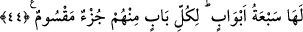

âhiretteki zindanıdır.
44. Cehennemin yedi kapısı vardır. Onlardan her kapı için birer grup ayrılmıştır.
“Cehennemin yedi kapısı vardır.” Cehennemlikler o kapılardan girerler. Tabakalara
göre her kapı başka bir kapının üzerindedir. Her tabanın bir kapısı vardır. “Onlardan”
her biri bir tabakaya açılan “her kapı için birer grup ayrılmıştır.” Bu kapılara şeytana
uymaları istîdâdlarının gerektirdiği şekilde birbirlerinden ayrılmış, belirli bir grup
vardır.
Meselâ, en üstte bulunan birinci tabaka, müslüman olup da günah işleyenlerin
tabakasıdır. Şeyh-i Ekber (k.s.)’un, ‘Cehennem boş kalacaktır.” dediği rivâyet edilir.
Şeyh’in maksadı bu en üst tabakadır. Burası günah işlemiş müslümanların gireceği
yerdir. Kalbinde zerre kadar îman, yâni ma’rifetullah bulunanların burada sürekli
kalmayacakları husûsunda hiç şüphe yoktur. Böylece cehennem bomboş kalmış
olacaktır. Alt tabakalara girecek olanlar ise burada sürekli kalacaklardır.
Fakir (Bursevî) der ki: Hz. Şeyhin bu ifâdesi bize göre bir başka şekilde de
yorumlanabilir. Bu yorum ehlince mâlûmdur ve açıklanması doğru değildir.
İkinci tabakaya Yahûdîler, üçüncü tabakaya Hristiyanlar, dördüncü tabakaya Sabiîler,
beşinci tabakaya Mecûsîler, altıncı tabakaya Müşrikler, yedinci tabakaya ise Münâfıklar
girecektir.
Cehennem tabakalarının sıralanışı ile ilgili rivâyetler farklılık arz etmektedir. Çoğuna
göre ilk tabaka cehennem olmakla birlikte Müftî Sa‘dî Çelebi’nin Hâşiye’sinde de
geçtiği üzere bundan sonraki tabakalarda yine ihtilâf vardır. Cehennem adının niçin
verildiği yukarıda açıklanmıştı. Cehenneme ayrıca şiddetli yakıcılığı sebebiyle “lezâ”,
kırıp parçaladığından “hutâme”, tutuştuğundan “saîr”, ateşinin alevleri şiddetli
olduğundan “sekar”, derinliği sebebiyle “cahîm”, derin ve alçak olmasından dolayı
“hâviye” ismi de verilmiştir.
Bahru’l-ulûm’da şöyle denilir: “Bilesin ki bu yedi kapı, yedi organı ile, yâni gözü,
kulağı, dili, karnı, cinsiyet organı, eli ve ayağı ile Allah’a isyan edenlerden başkasına
tahsis edilmez.”
Sıralama konusunda en uygun görüş, Fütûhât’taki şu görüştür: Bu kapıların yedi kapı
olması mükellef tutulan yedi organa göredir. Bu organlar ise kulak, göz, dil, el, ayak,
cinsiyet organı ve karındır. Bu yedi organ, cehennem kapılarının sıralanışını oluşturmuş
oluyor. Öyleyse bu organların hepsini Allah’ın yasaklayıp haram kıldığı her şeyden
koru. Aksi halde lehine olan aleyhine dönüşür, nîmet nikmete (azâba) döner.
Cehennemin yedi kapısı senin tenindedir